MJPEG vs WebRTC
Roadie puts a phone's screen in your web browser and lets you tap and type on it from there. It runs on a small computer beside the phone, the rig: a Raspberry Pi 4 here. It can send that picture two ways. MJPEG sends every frame as a complete photograph. WebRTC sends H.264 video, which describes only what changed since the last frame. For a phone screen that mostly sits still, the difference is a factor of ten to fifty in bandwidth, and a quarter of the rig's work.
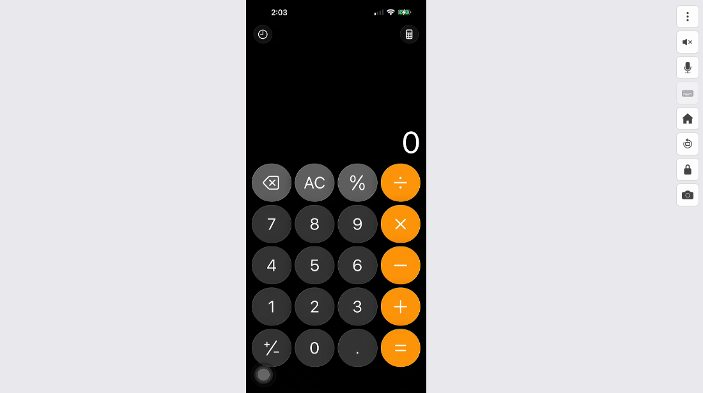
- If an agent is driving, the stream hardly matters. An agent does not watch video. It asks for a screenshot when it needs one, a JPEG of 20 to 60 KB, so its cost is per screenshot, not per hour, and the rig encodes no video at all while nobody is watching.
- If a person is watching, use WebRTC. For the same picture it moves a tenth to a fiftieth of the data MJPEG does and costs the rig a quarter of the work. MJPEG stays as the fallback for a browser or a network where WebRTC cannot connect.
Only if a person is watching. An agent driving the phone does not watch; it takes screenshots, and a very busy month of those is 27 GB, 2% of the cap. The exception is recording: when Vibium drives the phone with recording on, its Firefox sits on the viewer page and the stream flows to it for the whole session, with nobody watching. The WebM file is written wherever that Firefox runs, a cloud box or a laptop, but the stream still crosses the network to get there.
Behind those figures: MJPEG at 1080p, 30 frames a second, JPEG quality 94 is 15.4 Mbps, 6.9 GB an hour. WebRTC on the same picture is 0.3 Mbps while the screen sits still and up to its cap when things move, 0.1 to 0.7 GB an hour. Measured on Oct 27, 2026 on a Roadie server: a Raspberry Pi 4 with an iPhone 15 Pro Max attached, in portrait. Landscape figures are scaled from those measurements by pixel count; everything else is measured. The method is at the end.
How the picture gets to you
The phone's screen leaves it as an HDMI signal, the same kind a TV takes, through a USB-C hub. A small HDMI-to-USB capture device, the kind sold for recording game consoles, turns that signal into a stream of plain 1920×1080 pictures, 30 a second, and hands them to the rig, the Raspberry Pi 4 that runs Roadie. Roadie first crops away the black bars around the phone's picture, so what travels is the phone's screen and nothing else. From there, the picture has two roads to the browser:
- MJPEG, Motion JPEG. The Pi compresses each picture into a JPEG, like a photo from a camera, and sends them one after another over an ordinary web connection. The browser shows each one as it arrives. Simple, works everywhere, and every frame starts from scratch.
- WebRTC, carrying H.264. The Pi 4's built-in video encoder, the same kind of hardware that compresses video in a phone camera, turns the pictures into an H.264 video stream. Every two seconds it sends a complete picture, a keyframe; between those it sends only the differences. WebRTC is the browser's channel for live video, the one video calls use. On a flaky network it drops late frames instead of queueing them, so the picture stays current.
Bandwidth here is in megabits per second (Mbps). A stream at 1 Mbps moves 450 MB in an hour.
Who uses it, and what a month costs
Four kinds of use, with the hours and data each adds up to in a month, and what share of a 1.2 TB cap that is. The month columns count the stream while a person watches plus the agent's screenshots. The assumptions are under the table; the calculator below takes others.
- Watching over WebRTC averages 0.5 Mbps, between a still screen and light activity; with an agent tapping away the whole time, 0.8 Mbps. MJPEG is at Roadie's defaults: 1080p, 30 frames a second, quality 80.
- A screenshot at quality 80 is 39 KB. A month is 30 days, a working month 22 days of 8 hours.
- While nobody is watching, the rig captures but encodes nothing; a screenshot costs it a few milliseconds of work.
About that cap: where a home connection has one it is 1 to 1.5 TB a month. Xfinity's is 1.2 TB on older plans, dropped from plans sold since June 2025 and never applied in the Northeast; Cox keeps 1.25 TB on every wired plan; AT&T's older copper and DSL tiers have 1 to 1.5 TB, its fiber none. Most fiber providers have no cap, and overage runs about $10 per 50 GB where one applies. The stream counts on whichever end has a cap: the rig's connection uploads it, the viewer's downloads it.
Try other settings
MJPEG
| Each frame | 64.1 KB |
| Bandwidth | 15.4 Mbps |
| 5 minutes | 577 MB |
| 1 hour | 6.9 GB |
| 5 hours | 34.6 GB |
| A week | |
| A month | |
| Of a 1.2 TB monthly cap |
WebRTC, H.264
| Frames | 30 fps, as captured |
| Bandwidth | 0.3 Mbps |
| 5 minutes | 11 MB |
| 1 hour | 135 MB |
| 5 hours | 675 MB |
| A week | |
| A month | |
| Of a 1.2 TB monthly cap |
An hour, a week, a month
Data per hour for a few common settings, portrait at 1080p. The WebRTC bars are the measured still screen and two bitrate caps; a real session lands between the still figure and its cap.
The same settings over a week and a month, for someone who watches four hours a day, eight hours a day, or leaves it running around the clock. A month is 30 days.
Audio, and screenshots at a steady pace
Two more things can run around the clock. Audio today travels as raw PCM over a WebSocket, 48 kHz stereo 32-bit samples at 3.1 Mbps, which is more than the video over WebRTC: a month of it alone almost fills a 1.2 TB cap. The next milestone moves audio onto the WebRTC connection as G.722 or PCMU, 64 kbps of sound, about 80 kbps on the wire with packet headers, a fortieth of today. The microphone the other way, from the viewer to the phone, is 256 kbps today while someone talks and will share the WebRTC connection at 64 kbps as well.
An agent that takes a screenshot on a timer, rather than when it needs one, spends by the pace it picks:
What an agent sees
An agent such as Claude Code, Codex or a platform's own model does not watch the stream. It drives the phone through Roadie's API, sending taps and keystrokes, and asks for a screenshot when it wants to see the result. Each screenshot is one JPEG, at the quality the agent asks for, of the phone's picture and nothing else. That is the same path a person's Screenshot button uses.
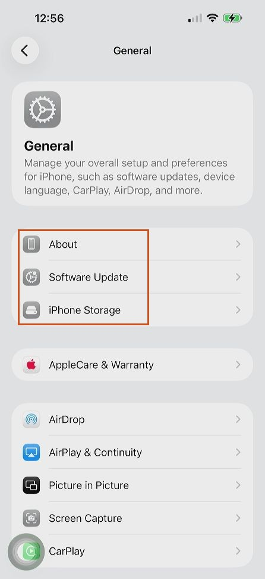
The full screenshot at quality 80, 39 KB. The outlined region is shown below at twice its size, straight from the rig at each quality, with each file's size.
The iPhone 15 Pro Max's screen is 1290×2796 pixels; over HDMI it arrives as a 446×972 picture, so every screenshot is already about a third of the phone's own resolution on each side. That is still plenty to read.
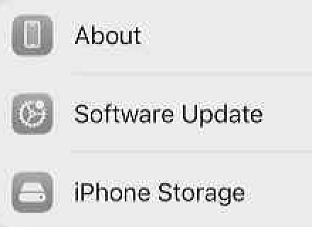
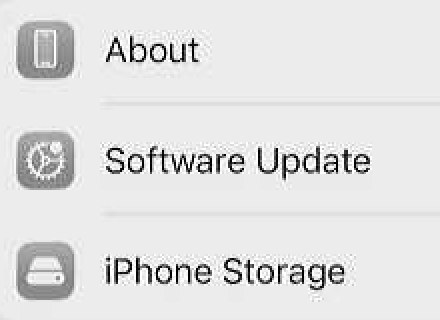
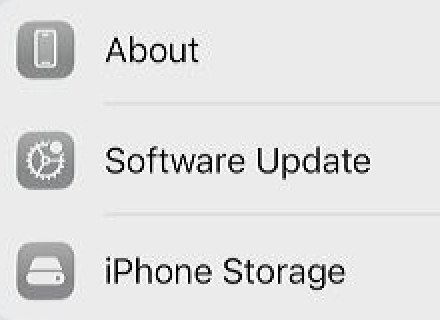
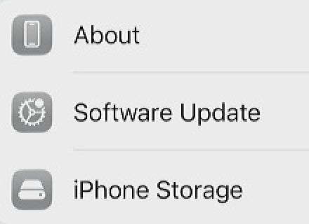
For reading a screen, which is what an agent does with a screenshot, quality 50 to 80 is plenty, and a thousand screenshots at the default come to 39 MB: less than six minutes of the default MJPEG stream. The encoder chip is not involved; a screenshot is one JPEG encoded in software, a few milliseconds.
Why the gap is so wide
- MJPEG pays for every pixel, every frame. A 64 KB photo thirty times a second is 15 Mbps whether or not anything on the screen moved. Lowering the quality or the frame rate helps in proportion: half the frames, half the data.
- H.264 pays for change. A still screen costs a keyframe every two seconds plus near-empty frames in between: about 0.3 Mbps, measured. Scrolling or video costs more, but never more than the cap, which the viewer's connection sets by itself between 0.3 and 4 Mbps. The Bitrate slider in the viewer's menu can hold it lower.
- The Pi works less too. JPEG is compressed in software, by the rig's general-purpose processor. H.264 is compressed by a separate encoder chip the Pi 4 has for exactly this job.
What the bitrate cap does
JPEG quality and the WebRTC bitrate cap are different kinds of knob. Quality decides how many bytes every frame gets, moving or not. The cap decides the most the H.264 stream may use, averaged over about a second, and the encoder only spends that when something is moving.
| Cap | Most it can use per hour | What you see when things move | When it fits |
|---|---|---|---|
| 300 kbps | 135 MB | Soft, smeary scrolling; text sharp again within 2 s of stopping | A tethered or metered connection |
| 800 kbps | 360 MB | Readable while scrolling, some blockiness on fast motion | Weak Wi-Fi, or a viewer far away |
| 1.5 Mbps | 675 MB | Clean scrolling, video content a little soft | The usual starting point |
| 4 Mbps | 1.8 GB | Everything crisp, including video apps | The same network, or a good home connection |
- A still screen costs about the same at any cap, about 0.3 Mbps: a keyframe every two seconds and almost nothing in between. The cap is a ceiling, not a rate. Only at 300 kbps are the keyframes themselves squeezed enough to soften the still picture a little; see the pictures in the next section.
- Left alone, the connection chooses. The viewer's browser reports what arrives and when, and the rig moves its target between 0.3 and 4 Mbps accordingly. On the same network it climbs to 4 Mbps within seconds; on a struggling link it falls. Below 0.6 Mbps Roadie also halves the frame rate so that each frame keeps enough bytes to stay legible: at a 300 kbps cap the stream measured 15 frames a second today, at 1.5 and 4 Mbps the full 30. Twice today the estimate fell back to the floor right after a burst of motion and stayed there, which is on the list for the next milestone.
- It does not change the frame rate (30 a second, as captured), the picture's size, or the delay by more than a few milliseconds. A lower cap makes motion softer; once the screen settles, the next keyframe restores full sharpness.
- In the calculator, the WebRTC figures for a moving screen are this ceiling. A session that scrolls now and then lands between the still figure and the cap.
What the bitrate cap does to the picture
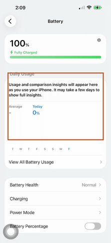
The Battery page of the phone's Settings, watched over WebRTC at two different caps. The outlined band, a paragraph of text and two figures, is shown below at its true size: first with the page sitting still, then at the same instant of the same animation, the Charging page sliding in from the right after a tap on its row. A slide like that is about as fast as a phone screen changes outside video.
A third stream at the 4 Mbps cap looked the same as the 1.5 Mbps one in both states, so it is left out of the pictures.
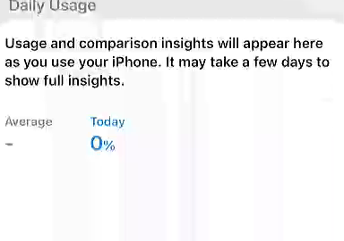
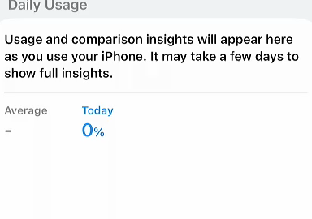
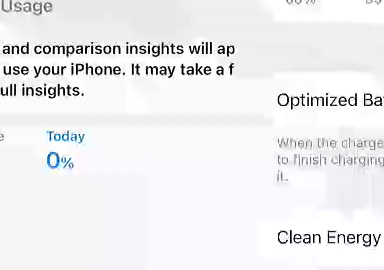
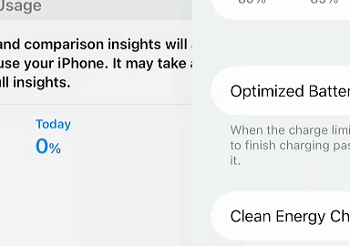
Two things to take from these. A 300 kbps cap is a real compromise: the still page is a touch soft and anything moving turns to blocks, which is what a weak link gets you. And above about 1.5 Mbps the cap rarely binds on a phone screen: this slide used 1.3 Mbps in its busiest second under the 1.5 Mbps cap and 2.1 under the 4 Mbps cap, with nothing to show for the difference, and a video app is the only thing that would push it to 4.
Portrait, landscape and the black bars
The capture device always delivers the full 1920×1080 frame, the shape of a TV picture. In portrait the phone fills only a strip down the middle of it, with black bars either side; in landscape it fills most of the frame. Roadie crops the frame to the phone's picture before sending, so the black bars cost nothing on either transport.
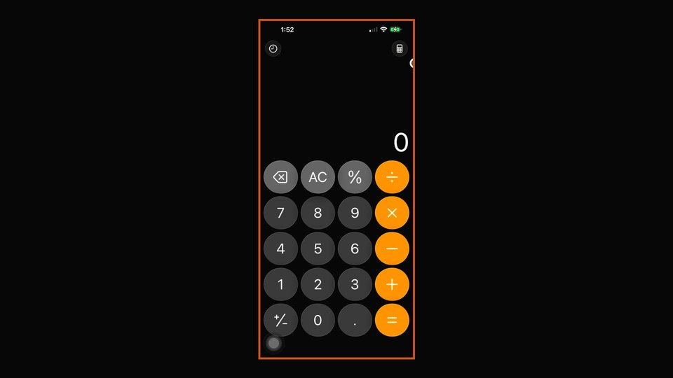
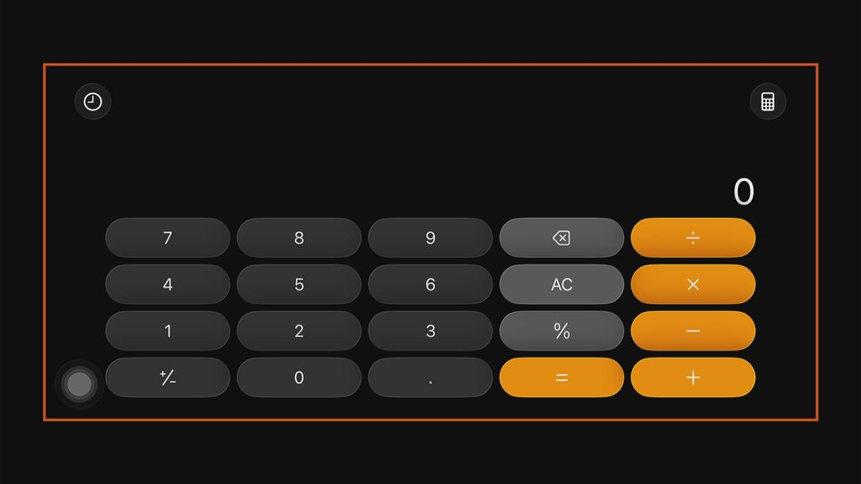
The same app, the same quality 80, measured a minute apart: the portrait screenshot is 38 KB, the landscape one 64 KB. That is 1.7 times the bytes for 3.2 times the pixels, because Calculator's landscape layout is mostly black. A text-heavy screen such as Settings grows closer to the pixel count, which is what the estimate in the table assumes.
What orientation changes is how much of the frame is picture:
| Picture | Pixels | Share of the frame | MJPEG frame at quality 80 | MJPEG at 30 fps |
|---|---|---|---|---|
| Portrait, 446×972 | 0.43 MP | 21% | 38 KB | 9.0 Mbps |
| Landscape, 1728×798 | 1.38 MP | 66% | 120 KB (est.) | 28.7 Mbps (est.) |
| Whole frame, 1920×1080 | 2.07 MP | 100% | 64 KB | 15.4 Mbps |
Landscape is not cheaper to send. It is a bigger picture, three times the pixels, so MJPEG costs about three times as much. Less of the frame is thrown away, but what is kept has to be sent. WebRTC barely notices: a still screen costs about the same at either size, and only the moving case grows with the picture, up to the cap. The whole uncropped frame costs less than the landscape crop because its black bars compress to almost nothing in a JPEG, which is also why cropping saves so much more in portrait than in landscape.
What a JPEG frame weighs
Bytes per frame of the portrait picture at each quality, from one raw frame of the calculator app, compressed by Roadie's own JPEG encoder. Quality 80 is Roadie's default; the headline at the top uses 94, the sharpest the viewer offers.
The 720p picture (298×648) weighs more per pixel than the 1080p one because the same detail is packed into fewer pixels. Quality values below 50 look visibly blocky on text.
What the rig does
| Case, 1080p capture at 30 fps | Roadie's share of one processor core |
|---|---|
| Nobody watching | 9% |
| One WebRTC viewer | 20 to 26% |
| One MJPEG viewer, 720p at 10 fps | about 26% |
| One MJPEG viewer, 1080p at 30 fps | 92% |
The Pi 4 has four cores, so even the worst case leaves room, but a core almost fully busy on JPEG is a core running hot and not available for anything else. That software compression is the whole cost of MJPEG: the rig compresses each frame once, however many people watch, so a second MJPEG viewer adds bandwidth but not work. WebRTC compresses once too and sends the same stream to each viewer. The browser's side also favours H.264: decoding it took 2 ms a frame in Chromium, against building a new image from a JPEG thirty times a second.
Delay
On the same network both arrive quickly. WebRTC measured about 90 to 100 ms from the phone's glass to the browser's: 32 ms for the capture device to deliver a frame, 5 ms to compress it, 1 ms across the network, 33 ms waiting in the browser's buffer so that playback stays smooth, and 2 ms to decode. MJPEG travels over an ordinary web connection, which never drops anything, so on a congested or lossy link it queues up and the picture falls behind. WebRTC drops late frames and stays current. That matters more away from home than on the home network.
What ends up in a recording
Vibium records a session with Firefox's WebDriver BiDi screencast: the Firefox that Vibium drives records what it shows and writes a WebM file, a third format that is neither of Roadie's two. When Vibium drives a phone with recording on, that Firefox is showing Roadie's viewer page, so the recording is a re-encoding of whatever the viewer displayed. Three things follow:
- The recording can only be as sharp as the stream. A viewer on WebRTC at a low cap records soft motion; one on MJPEG at quality 94 records sharp frames, with the rig at full stretch the whole time. From 1.5 Mbps up the still screen is sharp either way.
- Recording keeps the stream running. Vibium's Firefox stays on the viewer page for the whole session whether or not anyone looks at it, so the stream's cost applies for as long as the recording does: the "recording on" row above, not the agent-only row.
- The file is written where Vibium runs, a cloud box or a laptop, not on the rig. Firefox's encoder sets its size, not Roadie's settings. The network cost is the stream that fed it, which crosses from the rig to that machine the whole time.
For an agent reading a recording afterwards, sharp keyframes matter more than smooth motion, which is the opposite of what a person watching live wants. A recording made on the rig from the H.264 stream, or from screenshots taken whenever the screen changes, would give that without a browser in the loop; neither exists yet.
How this was measured
- The rig: a Raspberry Pi 4 running Roadie, a UGREEN HDMI-to-USB capture device (model 15389), and an iPhone 15 Pro Max connected through a USB-C hub with an HDMI output, in portrait.
- The whole frame: Roadie's
/raw-snapshot, which is the capture device's frame before cropping, with Calculator open in each orientation; the crop rectangles are the ones Roadie saved for this phone, from/api/crop. The two Calculator screenshots are/snapshot?quality=80in each orientation. - Screenshots: fetched from the running Roadie with
/snapshot?quality=at each quality, on the Settings screen shown; the sizes under the pictures are those files. - JPEG sizes: one full frame saved from Roadie at quality 94 (1920×1080, 88.5 KB), decoded and compressed again at each quality with the same JPEG encoder Roadie uses, for the portrait picture and for the same picture scaled to 720p. The landscape rows scale those bytes by pixel count, since the phone was in portrait.
- WebRTC: a test viewer with no screen (
rtcprobe, in the Roadie repository) connected to the running Roadie for 20 s while the screen sat still: 597 frames, 0.21 Mbps including a keyframe every 2 s; the encoder reported 0.33 Mbps in its busiest second. The caps are targets the encoder does not exceed over time. - The cap pictures: the headless viewer asked for each cap over the control channel and saved the H.264 stream while a held press opened the Battery page's Charging row; the frames were split out with ffmpeg, the still one taken a second before the slide and the moving one as the fastest-changing frame of it in each run, shown at the phone picture's own size. Rates are the bytes of the stream in the second around that frame.
- The viewer screenshot: headless Chromium on the rig, signed in with the token, with the WebRTC picture playing.
- CPU: Roadie's own
/healthpage andtopon the rig, with Roadie reading the capture device directly and using the rig's hardware H.264 encoder. - Data volumes are decimal (1 GB = 1000 MB) and count one viewer. Two viewers double the bandwidth on either transport.